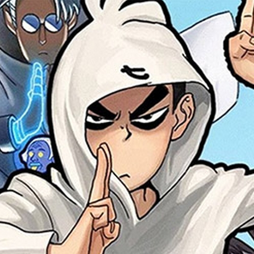
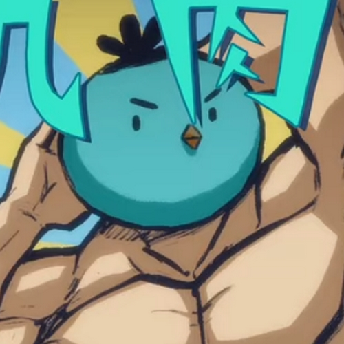
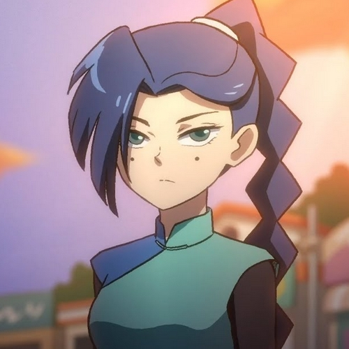

-

Sept
Sept ( Wǔ Liùqī, Simp. Chinese, 伍六七, lit. Five Six Seven) est le protagoniste principal de Scissor Seven (刺客伍六七). Il vit sur l'île aux poulets aux côtés de Dai Bo et Xiao Fei. Il souffre d'amnésie et souhaite retrouver la mémoire grâce à une opération médicale coûteuse ; il a donc décidé de devenir un tueur à gages pour s'enrichir rapidement. Son rang d'assassin est actuellement 17 369, principalement en raison de son incapacité comique à tuer quoi que ce soit (son rang d'assassin était autrefois le numéro 1, ce qui montre qu'il était un assassin plutôt habile).
-

Dai Bo
Dai Bo (鸡大保, Jī dà bǎo) est un personnage principal de Scissor Seven (刺客伍六七). Il a trouvé Sept sur une plage il y a deux ans et lui a sauvé la vie, mais à cause de cela, il est maintenant couvert par des factures médicales qu'il doit payer. Pour les payer toutes, il tente de mettre Sept dans toutes sortes de petits boulots, mais finit par le pousser dans un travail d'assassinat.
-

Xiao Fei
Xiao Fei (Simp. Chinese 鸡小飞, Ji Xiao Fei lit. Little Flying Chicken) est le fils de Da Fei et le fils adoptif de Dai Bo. C'est un poulet volant et il suit toujours Seven partout.
-

Treize
Treize (Méihuā Shísān, Simp. Chinese 梅花十三, lit. Plum Blossom Thirteen) est un mystérieux assassin masqué, antagoniste et allié occasionnel dans la saison 1. Sept s'amourache d'elle après leur deuxième rencontre, et a tendance à la draguer. C'est aussi la treizième fille de l'épéiste de Plum Blossom.